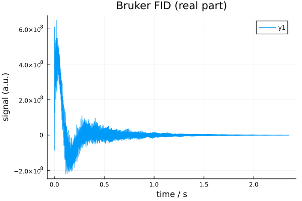
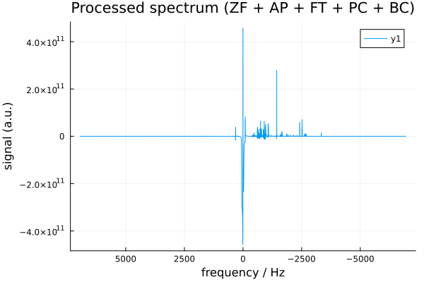

QuickStart
NMRflux.jl provides a unified Julia workflow for NMR data loading, classical processing, spin based simulation, and machine learning (Flux). This QuickStart shows the "happy path":
- Install
NMRflux.jl - Load an example dataset into
SpectData - Apply a typical 1D processing pipeline with
Chain - Run a toy deep learning denoiser using
SpectData+ Flux
1. Installation
To install the package from GitHub:
import Pkg
Pkg.add(url = "https://github.com/marcel-utz/NMRflux.jl.git")Once installation is complete:
using NMRflux2. Load a dataset into SpectData
SpectData is the central data structure in NMRflux.jl. It stores:
sd.dat: the numerical array (time domain FID or spectrum)sd.coord: coordinate vectors for each dimension (time, frequency, ppm, etc)
The documentation ships with small example datasets accessible via NMRflux.Examples.Data.
using NMRflux
using NMRflux.Examples
using Plots: plot, savefig
data_bruker = NMRflux.Examples.Data["HCC cell culture media spectra"]
# High level vendor loader (recommended)
params_bruker, data_td = NMRflux.load(joinpath(data_bruker["path"], "10"), :Bruker)
t = data_td.coord[1]
y = real.(data_td.dat)
plot(t, y;
xlabel = "time / s",
ylabel = "signal (a.u.)",
title = "Bruker FID (real part)")
savefig("quickstart_bruker_fid.svg"); nothing
3. Classical 1D processing pipeline
Most 1D processing follows a standard pipeline:
- Zero fill (improve digital resolution)
- Apodize (reduce truncation artefacts)
- Fourier transform (FID -> spectrum)
- Phase correction
- Baseline correction
In NMRflux.jl, processing is implemented via NMRProcessor functors that can be composed using Chain.
using NMRflux
using Plots: plot, savefig
# Load again (clean cell in Documenter)
params_bruker, data_td = NMRflux.load(joinpath(data_bruker["path"], "10"), :Bruker)
# Typical settings for a 1D spectrum
N_orig = length(data_td.dat)
N_target = 2^16
N_new = max(N_orig, N_target)
# Define mini processors
zf = ZeroFill([N_new])
ap = Apodize([0.5]) # time domain exponential decay constant
ft = FourierTransform([N_new], [1]; fftshift=true)
pc = PhaseCorrect(0.0, 0.0, 1) # example values (ph0, ph1, dim)
mbc = NMRflux.MedianBaselineCorrect(1; wdw=256)
p = Chain(zf, ap, ft, pc, mbc) # The main processor
data_fd = p(data_td) # processed frequency domain SpectData
f = data_fd.coord[1]
s = real.(data_fd.dat)
plot(f, s, xaxis=:flip,
xlabel="frequency / Hz",
ylabel="signal (a.u.)",
title="Processed spectrum (ZF + AP + FT + PC + BC)")
savefig("quickstart_processing_pipeline.svg"); nothing
4. Synthetic data (SpinSim / GenerateFIDs)
NMRflux.jl includes:
SpinSim: a lightweight Hilbert space simulator for spin dynamicsGenerateFIDs: a user facing module that generates paired clean/dirty synthetic signals via a TOML configuration
Synthetic batches follow the pairing convention: rows 1, 3, 5, ... are clean rows 2, 4, 6, ... are the corresponding dirty
using NMRflux
using NMRflux.GenerateFIDs
toml_file = joinpath(@DIR, "..", "examples", "synthetic", "Batch16k.toml")
batch_td = GenerateFIDs.generateBatch(toml_file; saveFile=false)
size(batch_td.dat) # (2*nbatch, TD)5. Toy deep learning example (SpectData + Flux)
We generate a target spectrum using NMRflux's classical baseline correction, then train a small Flux model to approximate this mapping. This demonstrates seamless interoperability between SpectData, NMRflux processing pipelines, and Flux models. This toy example demonstrates end-to-end compatibility between:
SpectData(data container)NMRfluxprocessing tools (FFT pipeline)Flux(a minimal 1D conv denoiser)
using NMRflux, NMRflux.Examples, Flux, Statistics
d=NMRflux.Examples.Data["HCC cell culture media spectra"] # Shipped Bruker example dataset
_, td = NMRflux.load(joinpath(d["path"], "10"), :Bruker) # Load time domain FID as SpectData
N = max(length(td.dat), 2^16) # Zero fill to at least 64k points
sd = NMRflux.Chain( # Standard 1D NMR processing pipeline
NMRflux.ZeroFill([N]),
NMRflux.Apodize([0.5]),
NMRflux.FourierTransform([N], [1]; fftshift=true)
)(td)
y = Float32.(real.(sd.dat)) # Raw data
yt = Float32.(real.(NMRflux.MedianBaselineCorrect(1; wdw=256)(sd).dat)) # Target generation
x = Float32.(collect(eachindex(y)) ./ length(y)) # Normalised frequency coordinate
m = Flux.Chain(Dense(1,16,tanh), Dense(16,1)) # Minimal MLP mapping position -> signal
opt = Adam(1e-2) # Adam optimiser with small learning rate
for _ in 1:200
loss() = Flux.mse(vec(m(reshape(x,1,:))), yt) # MSE between prediction and target
gs = Flux.gradient(loss, Flux.params(m)) # Compute gradients of the loss w.r.t. model
Flux.update!(opt, Flux.params(m), gs) # Update model parameters using Adam
end